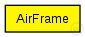

This documentation is released under the Creative Commons license
This documentation is released under the Creative Commons licenseFormat of the packets that are sent to the channel
subclass if you want to create your own AirFrame packet class (see Omnet manual, chapter Messages - Inheritance among packet classes).
This packet format is used to send a packet from the physical layer to the channel. All other physical layers that can 'hear' this packet can evaluate noise, interference etc. from the information contained in this packet (especially the signal):
If you need more fields for whatever reason, please do NOT create your own packet! Just extend (subclass) this packet format
The following diagram shows usage relationships between types. Unresolved types are missing from the diagram. Click here to see the full picture.
The following diagram shows inheritance relationships for this type. Unresolved types are missing from the diagram. Click here to see the full picture.
| Name | Type | Description |
|---|---|---|
| id | long |
Unique ID of the AirFrame used as identifier for related control-AirFrames |
| duration | simtime_t |
time the AirFrames takes to be transmited (without propagation delay) |
| state | int |
state of the AirFrames, used by the physical layer as state machine for delay and transmission duration simulation |
| signal | Signal |
Contains the physical data of this AirFrame |
| type | int |
If type isn't null then this is a control-AirFrame and type specifies the control type. |
// // Format of the packets that are sent to the channel // // subclass if you want to create your own AirFrame packet class // (see Omnet manual, chapter Messages - Inheritance among packet // classes). // // This packet format is used to send a packet from the physical // layer to the channel. All other physical layers that can 'hear' // this packet can evaluate noise, interference etc. from the // information contained in this packet (especially the signal): // // If you need more fields for whatever reason, please do NOT create // your own packet! Just extend (subclass) this packet format // packet AirFrame { Signal signal; // Contains the physical data of this AirFrame simtime_t duration; // time the AirFrames takes to be transmited (without propagation delay) int state = 1; // state of the AirFrames, used by the physical layer // as state machine for delay and transmission duration // simulation int type = 0; // If type isn't null then this is a control-AirFrame // and type specifies the control type. long id; // Unique ID of the AirFrame used as identifier for // related control-AirFrames }
This documentation is released under the Creative Commons license